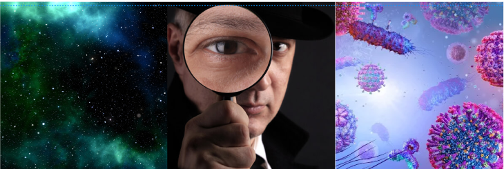

Conclusão
Pode-se ver que, ao decorrer dos séculos, a criação das lentes foi essencial para que a humanidade pudessem ampliar a visão do que estava acontecendo no mundo ao seu redor, algo que, ao olho nu, não seria possível descobrir e analisar. Dessa maneira, com a utilização das lentes para construir instrumentos de observação, o homem pode iniciar a exploração do micro ao macro, endentendo o verdade por traz de diversos fenômenos em sua realidade. Assim, os instrumantos opticos não ampliaram só a visão humana, mas também a visão do conhecimento.